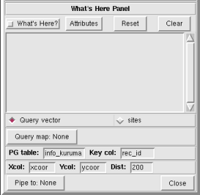
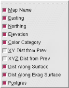

NVIZ Reference Manual
CONTENTS
What's Here Panel
The What's Here panel lets you interactively query
surfaces, vectors and sites displayed in the NVIZ viewer.
Query results appear in the What's Here text box.
You can also pipe results directly to a text file.
Query points appear in the NVIZ viewer as icons.
-

OPTIONS
- What's Here?
- Turns the What's Here interactive query on and off.
- Attributes
- Lets you select optional output query attributes.

-
- Map Name
- Names the query map (surface) used.
- Easting
- Provides the easting of the query point.
- Northing
- Provides the northing of the query point.
- Elevation
- Provides the elevation of the query point.
- Color Category
- Provides the surface color (as RGB) of the query point.
- XY Dist from Prev
- Provides the horizontal distance (XY) between the current and
the previous query points.
- XYZ Dist from Prev
- Provides the actual distance (XYZ) between the current and the
previous query points.
- Dist Along Surface
- Provides the overland (draped) distance between the current and
the previous query points.
If selected, a line draws between the current and the previous query
points.
- Dist Along Exag Surface
- Provides the overland (draped) distance between the current and
the previous query points using vertically exaggerated elevations.
The vertical exaggeration used in this calculation comes from the
surface zexag value. If selected, a line draws
between the current and the previous query points.
- Postgres
- Queries the selected (g.select.pg) database based on results
from the current query point.
- Reset
- Adds a horizontal line to the query output.
- Clear
- Clears the What's Here panel text box (query results).
- Query vector
- Uses the query results from selected vector (see Query map) to query
a selected (g.select.pg) Postgres database.
- Query sites
- Uses the query results from selected sites file (see Query map) to
query a selected (g.select.pg) Postgres database.
- Query map
- Selects the file (vector or sites) to use for the Postgres query. If
you select Query vector, provide a vector map name. If
you select Query sites, provide a sites file name.
- PG Table
- Enter the name of the Postgres table. The table must be in the currently
selected Postgres database.
- key col
- Enter the name of the column in the Postgres table. The column must be
in the currently selected table.
- Xcol
- Enter the name of the easting column in the selected Postgres table.
Use only with the Query sites option.
- Ycol
- Enter the name of the northing column in the selected Postgres table.
Use only with the Query sites option.
- Dist
- Enter the radius from the selected query point to search the Postgres
Xcol and Ycol. In other words, return all
of the database records within the set distance from the selected point.
- Pipe to
- Outputs query results to a user defined text file.
- Close
- Closes the What's Here panel.